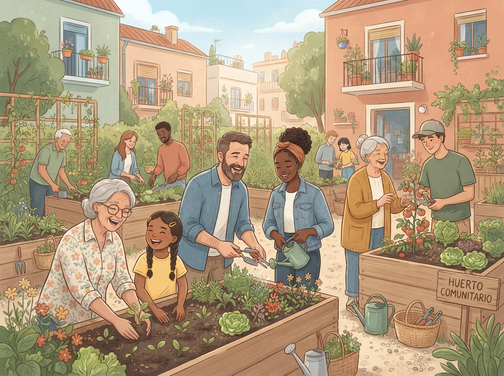
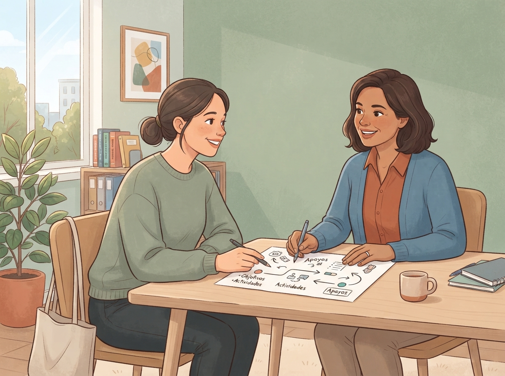
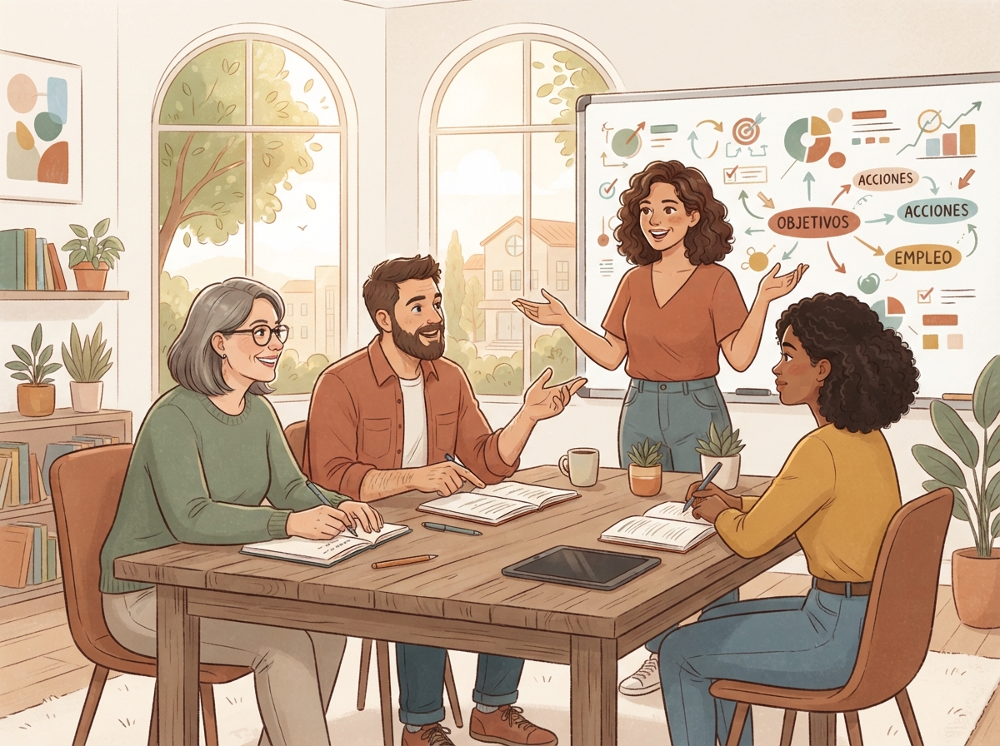
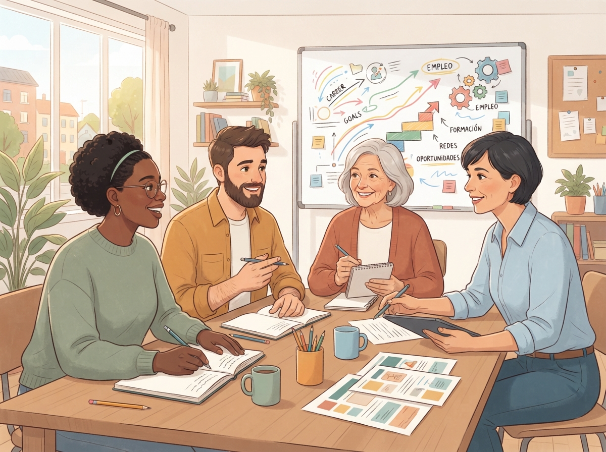

El papel del trabajo social en los procesos de reinserción social de las personas privadas de libertad
El trabajo analiza el papel, las actuaciones y las estrategias de intervención del trabajo social para abordar las necesidades y dificultades de las personas privadas de libertad en su regreso a la sociedad, con el fin de favorecer su reinserción social y prevenir situaciones de exclusión y reincidencia.

Galería
A través de ilustraciones editoriales en tonos cálidos, las imágenes retratan espacios luminosos y acogedores donde se desarrollan dinámicas de acompañamiento y diálogo cercano, tanto en talleres grupales de orientación sociolaboral como en sesiones individuales de planificación. En conjunto, transmiten un ambiente de colaboración, inclusión y apoyo mutuo orientado a fomentar la autonomía personal..

La imagen humaniza y visualiza el enfoque colaborativo de la intervención social, mostrando una relación horizontal y de confianza en la que la persona participa activamente junto a la profesional en el diseño de su propio itinerario. Además, el ambiente luminoso y los tonos cálidos transmiten cercanía y seguridad, reforzando la idea de un acompañamiento centrado en la persona y en la planificación compartida de objetivos, actividades y apoyos. Imagen generada con Gemini (IA).

La imagen humaniza el proceso de orientación sociolaboral al mostrar una intervención cercana, participativa y horizontal, alejada de un enfoque meramente asistencialista. Asimismo, refuerza visualmente valores esenciales del trabajo social —como la diversidad, el apoyo mutuo y la autonomía— y refleja cómo, en un entorno seguro y acogedor, se planifican de forma conjunta los objetivos y acciones hacia la inserción laboral.
. Imagen generada con Gemini (IA).

La imagen humaniza y aporta cercanía a la orientación sociolaboral, transformando un proceso que suele percibirse como burocrático en un espacio cálido y accesible. Además, la diversidad de las personas participantes y su disposición horizontal alrededor de la mesa refuerzan visualmente valores esenciales del tema, como la inclusión, la autonomía y el apoyo mutuo.. Imagen generada con Gemini (IA).
section id="video">
Vídeo de presentación
En este vídeo te contamos el proyecto en menos de un minuto y medio.